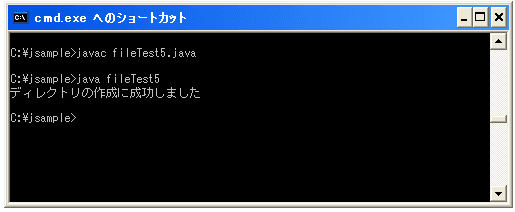
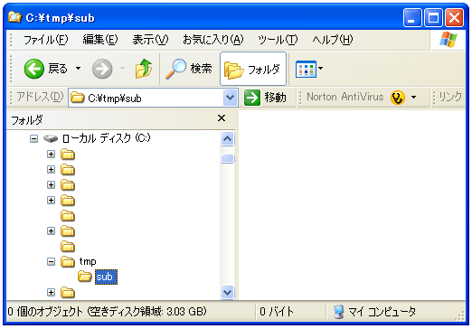
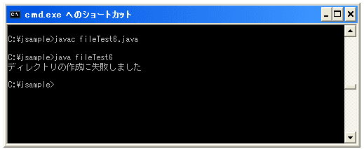
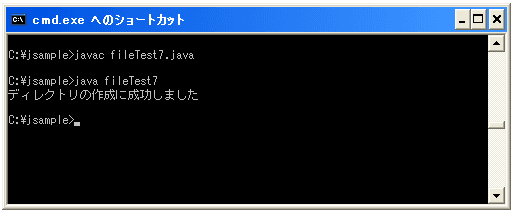

ディレクトリを作成する
今度はディレクトリを作成してみます。Fileクラスで用意されている"mkdir"メソッドを使います。
mkdir public boolean mkdir()
この抽象パス名が示すディレクトリを生成します。
戻り値:
ディレクトリが生成された場合は true、そうでない場合は false
例外:
SecurityException - セキュリティマネージャが存在し、セキュリティマネージャの
SecurityManager.checkWrite(java.lang.String) メソッドが指定されたディレクトリの生成を
許可しない場合
では作成方法を順を追って見ていきます。まずは作成しようとするディレクトリ名でFileクラスのオブジェクトを作成します。
File newdir = new File("c:\\tmp\\sub");
次に作成したFileクラスのオブジェクトに対して"mkdir"メソッドを実行します。
File newdir = new File("c:\\tmp\\sub");
newdir.mkdir();
これでディレクトリが作成されました。
サンプルプログラム
では一度試してみましょう。
import java.io.File;
class fileTest5{
public static void main(String args[]){
File newfile = new File("c:\\tmp\\sub");
if (newfile.mkdir()){
System.out.println("ディレクトリの作成に成功しました");
}else{
System.out.println("ディレクトリの作成に失敗しました");
}
}
}
上記をコンパイルして実際に実行してみると下記のようになります。

実際に確認してみると下記のようにディレクトリが作成されています。

親ディレクトリがまだ存在しないディレクトリの作成
先ほどは既にあるディレクトリの中に別のディレクトリを作成しました。今度は親ディレクトリもまとめて作成してみます。親ディレクトリもまとめてとは、例えばCドライブには「temp」というディレクトリはありませんけど、「c:\temp\sub」といった親ディレクトリもまだ存在しない「sub」というディレクトリを作成してみます。
import java.io.File;
class fileTest6{
public static void main(String args[]){
File newfile = new File("c:\\temp\\sub");
if (newfile.mkdir()){
System.out.println("ディレクトリの作成に成功しました");
}else{
System.out.println("ディレクトリの作成に失敗しました");
}
}
}
上記をコンパイルして実際に実行してみると下記のようになります。

今度は失敗しました。「mdir」には親ディレクトリが存在していないような状態でディレクトリを作成することは出来ないためです。
このような場合には親ディレクトリから1つ1つ作成していくか、またはFileクラスで用意されている"mkdirs"メソッドを使います。
mkdirs public boolean mkdirs()
この抽象パス名が示すディレクトリを生成します。存在していないが必要な親ディ
レクトリも一緒に作成されます。このオペレーションが失敗した場合でも、いく
つかの必要な親ディレクトリの生成には成功している場合があります。
戻り値:
必要なすべての親ディレクトリを含めてディレクトリが生成された場合は
true、そうでない場合は false
例外:
SecurityException - セキュリティマネージャが存在し、セキュリティマ
ネージャの SecurityManager.checkRead(java.lang.String) メソッド
が指定されたディレクトリと、必要なすべての親ディレクトリの存在確
認を許可しない場合。
または、SecurityManager.checkWrite(java.lang.String) メソッドが
指定されたディレクトリと、必要なすべての親ディレクトリの生成を
許可しない場合
"mkdirs"メソッドの場合、作成しようとするディレクトリの親ディレクトリなどがなかった場合には、親ディレクトリも含めてまとめて作成してくれます。
では実際に試してみましょう。
import java.io.File;
class fileTest7{
public static void main(String args[]){
File newfile = new File("c:\\temp\\sub");
if (newfile.mkdirs()){
System.out.println("ディレクトリの作成に成功しました");
}else{
System.out.println("ディレクトリの作成に失敗しました");
}
}
}
上記をコンパイルして実際に実行してみると下記のようになります。

今度は成功しました。実際に確認してみると下記のようになっています。
作成しようとして「sub」ディレクトリも、存在していなかった親ディレクトリの「temp」も、まとめて作成されています。
( Written by Tatsuo Ikura )

著者 / TATSUO IKURA
初心者～中級者の方を対象としたプログラミング方法や開発環境の構築の解説を行うサイトの運営を行っています。